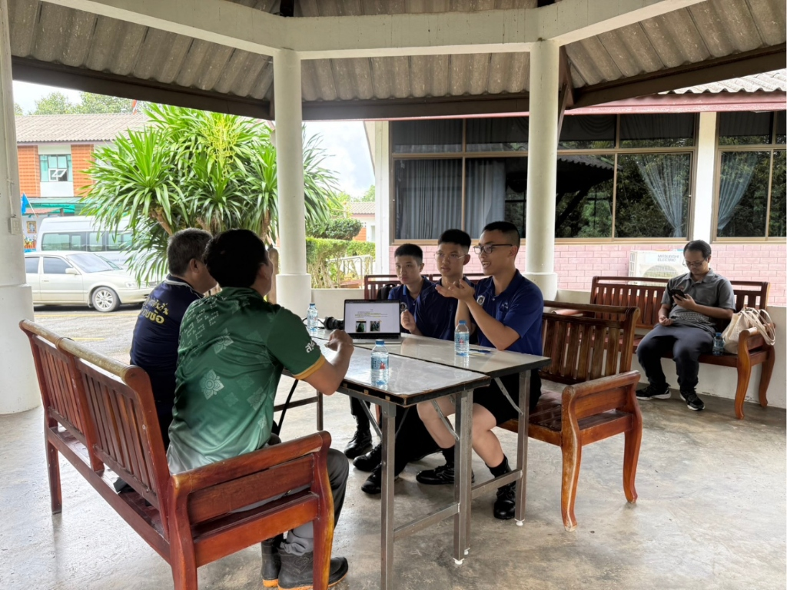

พูดคุยกับเกษตรกรและเจ้าหน้าที่ผู้เชี่ยวชาญ
ทีมผู้พัฒนาได้ลงพื้นที่พูดคุยแลกเปลี่ยนกับเกษตรกรและเจ้าหน้าที่ ณ ศูนย์พัฒนาไม้ผลตามพระราชดำริจังหวัดจันทบุรี เพื่อทำความเข้าใจโรคใบทุเรียนที่พบบ่อยในสวนจริง ปัญหาในการจำแนกอาการแต่ละระยะ รวมถึงข้อจำกัดเรื่องสัญญาณอินเทอร์เน็ตและการใช้งานมือถือของชาวสวน
เสียงสะท้อนจากหน้างานเหล่านี้ทำให้เราออกแบบแอปให้เมนูใช้งานง่าย ปุ่มใหญ่กดสะดวก ไม่ซับซ้อน และสามารถสแกนได้แม้ไม่มีอินเทอร์เน็ต



เก็บภาพใบทุเรียนจริงกว่า 4,668 ตัวอย่างจากในสวน
แทนที่จะใช้ภาพใบไม้บนพื้นหลังเรียบในห้องแล็บ ทีมวิจัยได้ลงเก็บภาพใบทุเรียนจากสภาพแวดล้อมจริงในสวน ที่มีทั้งแสงแดด เงา กิ่งไม้ และใบที่ซ้อนทับกัน แล้วนำมาจัดทำชุดข้อมูลจำนวน 4,668 ตัวอย่าง ครอบคลุม 7 ประเภท (5 โรคสำคัญ ใบปกติ และอาการอื่นๆ)
ตัวโมเดลใช้สถาปัตยกรรม YOLO-OBB ที่หมุนกรอบจับตามแนวเอียงของใบได้พอดี ทำให้ไม่ติดพื้นหลังอื่นมามากเกินไป และย่อขนาดให้ทำงานบนสมาร์ตโฟน Android ได้อย่างรวดเร็วโดยไม่ต้องต่ออินเทอร์เน็ต
นำเสนอผลงานบนเวที ITC-CSCC 2026 และเผยแพร่บน ResearchGate
แอปพลิเคชัน YOEDO เป็นส่วนหนึ่งของงานวิจัยด้านโมเดลตรวจจับโรคใบทุเรียน ซึ่งได้รับคัดเลือกให้นำเสนอในงานประชุมวิชาการระดับนานาชาติ The 41st International Technical Conference on Circuits/Systems, Computers, and Communications (ITC-CSCC 2026) ณ กรุงเทพมหานคร ส่วนบทความวิจัยเรื่อง “YOEDO: A Real-Time Mobile Application for Durian Leaf Disease Detection Using YOLO-OBB” จัดทำขึ้นสำหรับการนำเสนอผลงานในงาน Thailand-Japan Student ICT Fair (TJ-SIF 2026) และเผยแพร่บน ResearchGate เพื่อให้ผู้สนใจได้ศึกษาต่อยอด


ทีมผู้พัฒนา (Developers)
ผู้พัฒนาทั้งสามคนเป็นนักเรียนโรงเรียนมหิดลวิทยานุสรณ์
อาจารย์ที่ปรึกษา
คณาจารย์ผู้ให้คำปรึกษาและดูแลงานวิจัยจากทั้งสองสถาบัน
ดร.สิทธิโชค โสมอ่ำ
สาขาวิชาคณิตศาสตร์และวิทยาการคำนวณ
โรงเรียนมหิดลวิทยานุสรณ์
ดร.ธวัชชัย สุดใจ
สาขาวิชาฟิสิกส์
โรงเรียนมหิดลวิทยานุสรณ์
รองศาสตราจารย์ ดร.ภัทราพร ทองนิ่ม
ภาควิชาคณิตศาสตร์ คณะวิทยาศาสตร์
มหาวิทยาลัยบูรพา